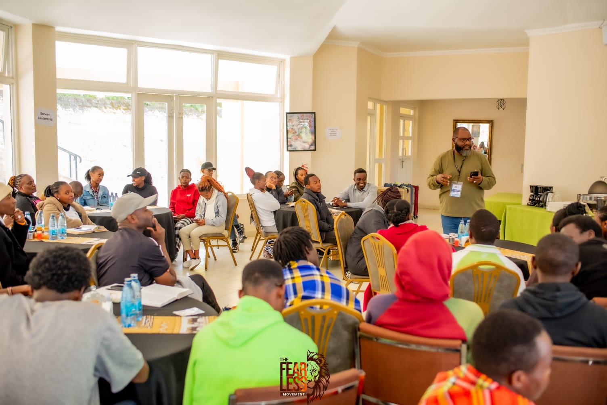
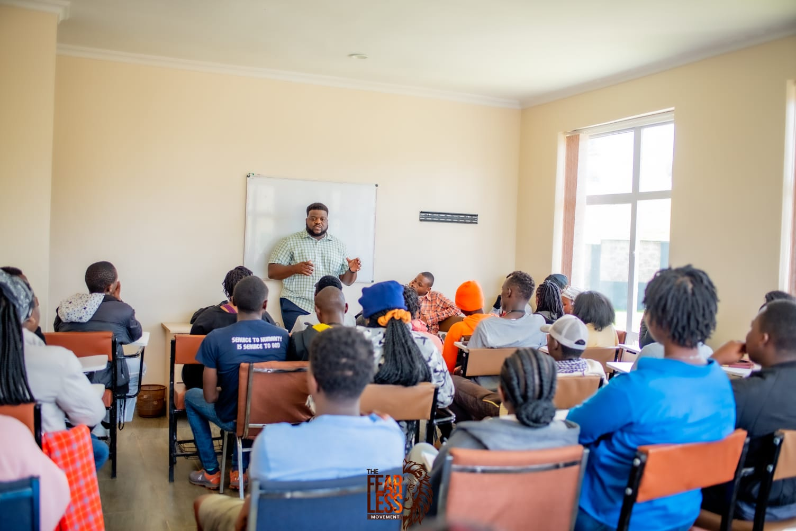
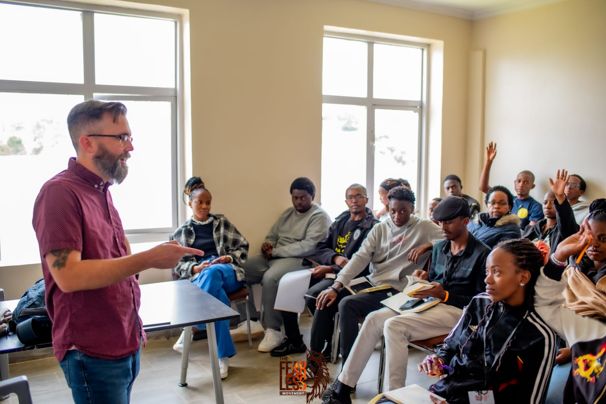

About Our Workshops
Our workshops are designed to address the real-life challenges young Christians face today. They focus on empowering individuals to navigate complex issues such as faith-based struggles, peer pressure, self-identity, the influence of modern culture, and emotional well-being. These challenges can sometimes lead to confusion, frustration, or a disconnect from God’s purpose, but our workshops aim to provide clarity and practical steps to overcome these hurdles.
Through interactive discussions, biblical insights, and real-world examples, participants will not only gain a deeper understanding of God’s word but also acquire practical tools to strengthen their relationship with God, develop resilience, and cultivate a Christ-centered life. Topics covered include building personal confidence through faith, understanding the importance of community, and handling stress, anxiety, and temptation in a godly way.
Each session fosters a safe and supportive environment, encouraging open dialogue, mutual learning, and spiritual growth. Participants will learn from one another’s experiences and discover how to support each other in their Christian walk.
The goal is to educate and inspire young Christians to live boldly for their faith, while building a strong foundation for tackling life’s challenges in alignment with God’s purpose. This series is about more than just personal growth—it’s about equipping the next generation to be leaders who reflect God’s love, kindness, and truth in their everyday lives.

Servant Leadership
Leading by example: The power of humility Topics:
The foundations of servant leadership, creating a culture of servanthood, biblical models of servant leadership,

Power of purity and sexuality
The "Power of Purity and Sexuality" workshop explores God’s design for purity and the role of
sexuality in a believer’s life. It provides biblical insights to navigate challenges with faith, offering practical tools
for embracing purity, overcoming temptations, and living in alignment with God’s purpose.

Battle of the Mind
SThe "Battle of the Minds" workshop explores the internal struggles Christians face,
such as anxiety, depression, and fear, through a biblical lens.
Rooted in Romans 12:2, it equips participants with practical tools to renew their minds, confront lies of the enemy, and embrace their identity in Christ.
This session fosters hope, resilience, and victory through God’s truth and transformative power.

Knowing your worth in Christ
The "Knowing Your Worth in Christ" workshop helps believers uncover their God-given value, identity,
and purpose. Rooted in biblical truths, it encourages participants to reject worldly standards and embrace their worth as beloved
children of God, fearfully and wonderfully made (Psalm 139:14).

Ministry wounds
The "Ministry Wounds" workshop explores the unique challenges faced in serving others within ministry,
addressing emotional hurts, conflicts, and disappointments. It offers biblical guidance on healing through forgiveness, self-care,
and setting healthy boundaries while empowering participants to embrace restoration and renewal for continued, resilient service.

Confidence on the waves
The "Keep in Step with the Spirit" workshop encourages believers to live a Spirit-led life,
guided by the fruit of the Spirit. It provides tools to deepen your relationship with the Holy Spirit, discern His voice,
and align your daily walk with God’s will.